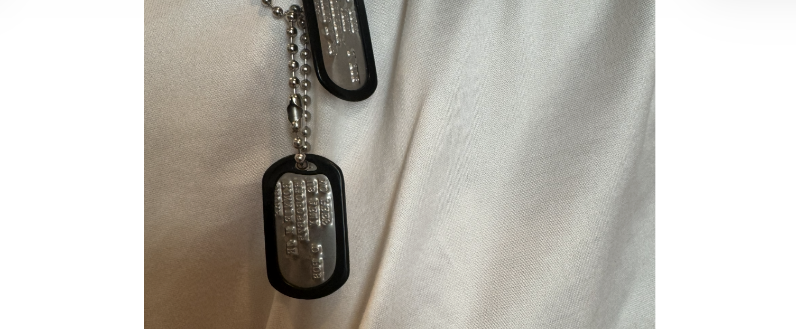

Wear Your Tags
Make military service visible and invite respectful conversation.

A national day of honor and remembrance
APRIL 18
Honor. Remember. Share Your Story.
Every tag represents a person.
Every person has a story.
Every story deserves to be remembered.
Our Mission
Dog Tag Day honors veterans, active-duty service members, military families, and the stories behind military identification tags.
Every April 18, Americans are invited to wear their tags, explain what they represent, listen to the stories of those who served, and remember those who never came home.
Wear your tags. Tell your story. Honor ours.
Official Observance
On Dog Tag Day, wear military dog tags with pride, share the history behind them, and ask the question that opens the door to remembrance:
“Where did you serve?”
Make military service visible and invite respectful conversation.
Share the people, places, memories, and sacrifices behind the tags.
Remember veterans, active-duty members, military families, and the fallen.
A Shared Connection
You may not know where they were stationed or what they did in the military. But you know where it began.
We all started as recruits. We all went through our own version of boot camp. We were handed those dog tags, and from there our paths took us in different directions.
So when you see someone wearing their dog tags, acknowledge them. A fist bump. A wave. A smile. A simple nod. You do not have to know their whole story to recognize the connection.
Different paths. Shared beginning. The tags connect us.
Why We Wear them
Dog tags carry the personal details that identify a service member — a name, a service number, a unit. They connect the wearer to a story, a place, and a role that shaped who they became.
Wearing tags signals belonging. It’s a quiet recognition of shared experience, sacrifice, and the bonds formed in training, service, and duty.
Tags are a visible reminder of service and sacrifice. Wearing them invites respect, remembrance, and the responsibility to keep those stories alive.
Whether worn openly or kept close, dog tags represent more than an identifier — they are symbols that invite connection, conversation, and remembrance.
Stories Behind the Tags
Dog Tag Day will preserve veteran stories, military family tributes, and memorials with the contributor’s permission.
First-person accounts about service, duty stations, friendships, and homecoming.
Stories from spouses, children, parents, and relatives honoring someone they love.
Respectful remembrance of those who served and are no longer with us.
No story will be published without the contributor’s approval.
A Message from the Founder
“I founded Dog Tag Day because every set of military dog tags represents a life of service, sacrifice, courage, and commitment. Those stories deserve to be seen, heard, andRonnie Shure
Founder
Dog Tag Day
Get Involved
Invite veterans, families, schools, civic organizations, businesses, and community leaders to observe April 18.
Volunteer opportunities will include outreach, story collection, local events, ceremonies, displays, and public awareness.
Contact Dog Tag Day